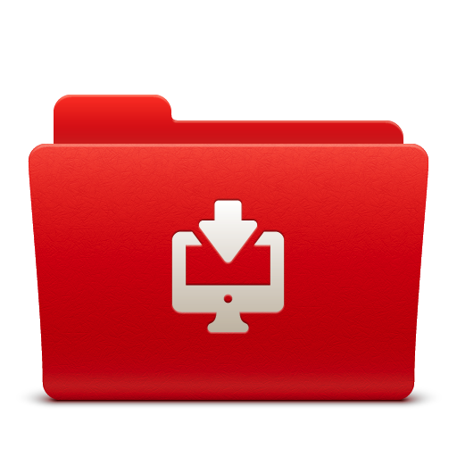
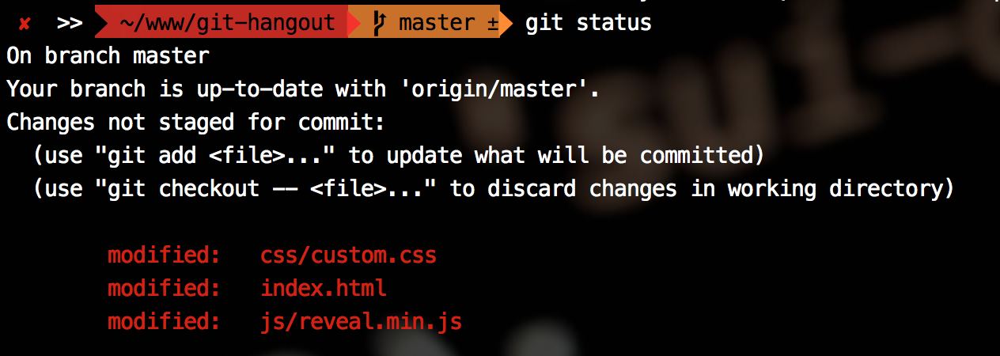

Cmd + p + |
nombre del archivo a buscar |
Mediante la Terminal Unix podemos acceder a programas de control de versiones de código, editores de texto, comparar archivos, etc...
A continuación vamos a ver un conjunto de instrucciones básicas.
MacOSX incorpora su propia consola llamada Terminal. Si lo preferimos, podemos instalar otras consolas que permiten más funcionalidades.
Terminal /Aplicaciones/Utilidades/Terminal.app
iTerm2 http://iterm2.com/
La consola que trae Windows por defecto no está basada en UNIX sino que se trata de un intérprete de MS-DOS. El archivo ejecutable se llama cmd.exe. De modo que para poder ejecutar comandos UNIX deberemos de instalar algunas de las siguientes terminales:
Git BASH http://git-scm.com/download/win
Cygwin http://cygwin.com
Babun http://babun.github.io/
cd
Entramos dentro de un directorio mediante:
$ cd [nombre de directorio]
Salimos de un directorio mediante:
$ cd ..
pwd
Print working directory. Muestra el directorio en el que nos encontramos:
$ pwd
/users/david.garcia/www/bau
mkdir
Creamos un directorio:
$ mkdir [nombre de directorio a crear]
touch
Crea un archivo nuevo vacío o actualiza la fecha de modificación de uno existente:
$ touch [opciones][nombre de archivo/os]
ls
Lista todos los archivos y carpetas contenidos en un directorio:
$ ls
Muestra la información completa de cada archivo y directorio:
$ ls -l
more
Mostramos el contenido de un archivo. Podemos usar [spacebar] para continuar o q para salir:
$ more [nombre del archivo]
Salimos de un directorio mediante:
$ cd ..
nano
Editor de archivos de texto en terminal:
$ nano [nombre de archivo existente]
Vim
Otro Editor de archivos de texto en terminal:
$ vi [nombre de archivo existente]
cp
Copia un archivo:
$ cp [nombre de archivo original] [nombre de archivo copiado]
mv
Movemos un archivo o directorio
$ mv [nombre del archivo][ruta a carpeta/nombre de archivo]
Mediante mv también podemos renombrar un archivo:
$ mv Gulpfile.js Gulpfile--BACKUP.js
diff
Comparamos 2 archivos y nos muestra sólo en qué se diferencian:
$ diff [archivo original][archivo a comparar]
Se denomina "distribuido" porque cada miembro del equipo dispone de una copia completa del código.

Los miembros del equipo pueden enviarse código, recibirlo y desarrollar funcionalidades de forma conjunta y separada del servidor central.

$ xcode-select --install
Git está disponible para Windows, Mac, Linux y Solaris.
Indicamos a Git nuestra info de usuario
$ git config --global user.name "David G."
$ git config --global user.email dave74@gmail.com
$ git config --global core.editor nano
En un directorio vacío ejecutamos el siguiente comando:
$ mkdir git-test
$ cd git-test
$ git init
Git init crea un directorio oculto .git con el siguiente contenido:
Git llevará un control exhaustivo sobre todos los cambios que vayamos haciendo.
$ touch README.md
Incluimos TODO lo que NO queramos incluir en nuestro repositorio.
$ touch .gitignore
Listado de archivos nuevos (untracked), borrados o editados
$ git status

Rutas relativas a la raíz del repositorio.El flujo de Git se distribuye en 3 estados locales y uno remoto
(commit)El primer nivel es nuestra carpeta de trabajo. Podemos añadir, quitar, editar archivos y Git sólo se encargará de controlar los archivos que han sido modificados:
Una vez creados, modificados, añadidos o borrados los archivos al working dir los pasamos al staging mediante:
$ git add nombre de archivo/os
o bien:
$ git add --all
todos los archivos
En el segundo nivel nuestros archivos están preparados para ser empaquetados. Podemos seguir trabajando y repetir el proceso tantas veces como necesitemos.
Cuando hemos completado un conjunto de cambios, los "empaquetamos" mediante la instrucción commit y los colocamos en el HEAD mediante:
$ git commit -m 'mensaje descriptivo'
Nuestro conjunto de cambios está listo para enviar al repositorio remoto. El HEAD es nuestra "bandeja de salida". Podemos seguir trabajando y crear más "commits".

Ahora vincularemos nuestro repo local con uno remoto en Github para poder trabajar en equipo:
Créate una cuenta en Github.comUna vez creado el repositorio remoto en Github lo "vinculamos" a nuestro repositorio local mediante:
$ git remote add origin https://github.com/user/repo.git
Una vez indicado a Git que tenemos un repositorio remoto podemos enviar el conjunto de cambios contenidos en nuestro HEAD mediante:
$ git push -u origin master
Por defecto Git denomina origin a nuestro repositorio remoto y crea una rama llamada master. Enviamos el contenido de HEAD mediante:
Un software de control de versiones adquiere mayor relevancia cuando colaboran diferentes miembros de un equipo sobre el mismo código.
Una vez creado el repositorio remoto, el resto de miembros del equipo pueden bajarse una copia a sus equipos mediante:
$ git clone https://github.com/user/repo.git
Sincronizar nuestro local con origin
Antes de enviar nuestros cambios tenemos que bajarnos la última versión de repositorio remoto
$ git pull origin master
Cuando obtenemos archivos del repositorio remoto a nuestra copia local Git obtiene todos los archivos nuevos que se hayan añadido y elimina los que se hayan quitado.
Consulta el historial de "commits" realizados por los diferentes miembros del equipo mediante:
$ git log